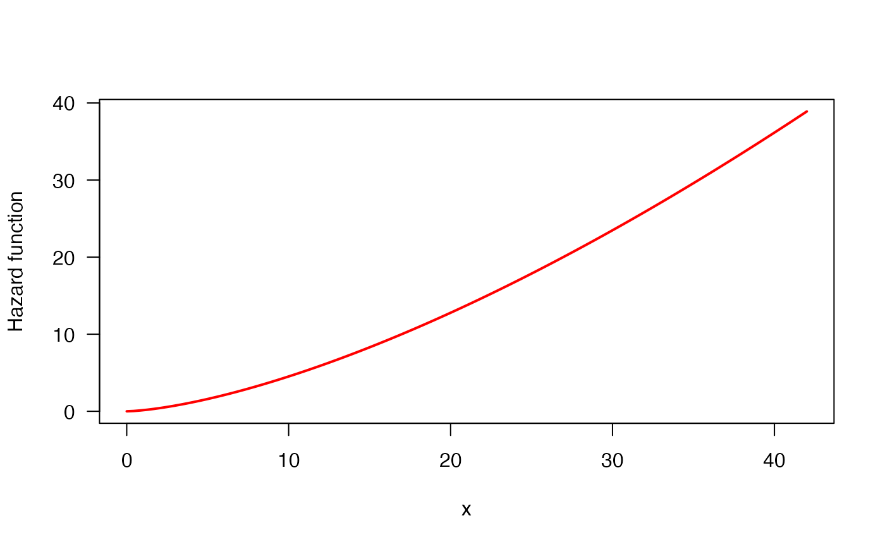

![[Experimental]](figures/lifecycle-experimental.svg)
This function can be used so as to estimate hazard shape corresponding
to a given data set. This is a wrapper for
TTTE_Analytical.
TTT_hazard_shape(object, ...)
# S3 method for formula
TTT_hazard_shape(
formula,
data = NULL,
local_reg = loess.options(),
interpolation = interp.options(),
silent = FALSE,
...
)
# S3 method for EmpiricalTTT
TTT_hazard_shape(
object,
local_reg = loess.options(),
interpolation = interp.options(),
silent = FALSE,
...
)Arguments
- object
An alternative way for getting the hazard shape estimation in passing directly the
EmpiricalTTTobject generated withTTTE_Analytical.- ...
further arguments passed to
TTTE_Analytical.- formula
An object of class
formulawith the response on the left of an operator~. The right side must be1.- data
an optional data frame containing the response variables. If data is not specified, the variables are taken from the environment from which
TTT_hazard_shapeis called.- local_reg
a list of control parameters for LOESS. See
loess.options.- interpolation
a list of control parameters for interpolation function. See
interp.options.- silent
logical. If TRUE, warnings of
TTT_hazard_shapeare suppressed.
Details
This function performs a non-parametric estimation of the empirical total time on test (TTT) plot. Then, this estimated curve can be used so as to get suggestions about initial values and the search region for parameters based on hazard shape associated to the shape of empirical TTT plot.
Use Hazard_Shape function to get the results for shape estimation.
See also
Examples
#--------------------------------------------------------------------------------
# Example 1: Increasing hazard and its corresponding TTT statistic with
# simulated data
hweibull <- function(x, shape, scale){
dweibull(x, shape, scale)/pweibull(x, shape, scale, lower.tail = FALSE)
}
curve(hweibull(x, shape = 2.5, scale = pi), from = 0, to = 42,
col = "red", ylab = "Hazard function", las = 1, lwd = 2)
y <- rweibull(n = 50, shape = 2.5, scale = pi)
status <- c(rep(1, 48), rep(0, 2))
my_initial_guess1 <- TTT_hazard_shape(Surv(y, status) ~ 1)
my_initial_guess1$hazard_type
#> [1] "Increasing"
#--------------------------------------------------------------------------------
# Example 2: Same example using an 'EmpiricalTTT' object
y <- rweibull(n = 50, shape = 2.5, scale = pi)
TTT_wei <- TTTE_Analytical(y ~ 1)
my_initial_guess2 <- TTT_hazard_shape(TTT_wei)
my_initial_guess2$hazard_type
#> [1] "Increasing"
#--------------------------------------------------------------------------------
# Example 3: Increasing hazard with simulated censored data
hweibull <- function(x, shape, scale){
dweibull(x, shape, scale)/pweibull(x, shape, scale, lower.tail = FALSE)
}
curve(hweibull(x, shape = 2.5, scale = pi), from = 0, to = 42,
col = "red", ylab = "Hazard function", las = 1, lwd = 2)

y <- rweibull(n = 50, shape = 2.5, scale = pi)
y <- sort(y)
status <- c(rep(1, 45), rep(0, 5))
my_initial_guess1 <- TTT_hazard_shape(Surv(y, status) ~ 1)
my_initial_guess1$hazard_type
#> [1] "Increasing"
#--------------------------------------------------------------------------------